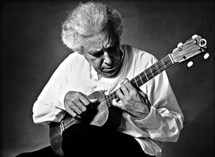
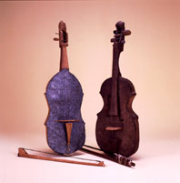
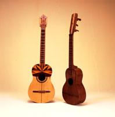

Ejemplos
de algunos virtuosos de música popular tradicional venezolana
son:
Ejemplos
de algunos virtuosos de música popular tradicional venezolana
son:IV. Instrumentos Musicales
Vamos a conocer los
instrumentos de la música
tradicional
de Venezuela para poder distinguirlos y apreciar la maravilla de
sus
sonoridades
y la música que transmiten. De esta manera, podremos escoger el
instrumento que deseemos aprender a tocar, sabiendo que él es
nuestro
mejor amigo para contarnos todos los secretos sobre la cultura
que
representa.
Cualquier objeto que pueda producir un sonido se
convierte
en un instrumento musical si el hombre lo utiliza para ese
propósito.
Sin embargo, el hombre ha desarrollado instrumentos que sirven
especialmente
para hacer música y éstos los hacen los fabricantes de
instrumentos.
Los ejecutantes los tocan con maestría y enseñan a otros
a tocarlos y disfrutar de la magia que es hacer música.
¿Qué es un Instrumento Musical?
Instrumentos Fabricante
Carrizos de San
José
Juan
Gregorio Malavé, Guárico
Arpa
Central
Juvencio
Fernández, Caracas
Arpa
Llanera
Angel
Lugo, Caracas
Bandola
Central
Alejandro
Parariá, Guárico
Bandola
Llanera
Misael
Montoya, Barinas
Bandola,
Bandolín
Cruz
Quinal, Sucre
Cuatros
Monterol
Mateo
Goyo, Lara
Cuatro,
Violín
Pablo
Canela, Lara
Guitarra
Ramón
Blanco, Caracas
Guitarra
Hermanos
Oliveira, Miranda
Instrumentos de
Cuerdas
Jorge Ball, Caracas
Todas las
Maracas
“Chindo”
Yánez, Caracas
Maracas
Llaneras
Máximo
Tepa, Portuguesa
Percusión
venezolana
Carlos
Caña, Caracas
Tambores
Barlovento
Fortunato
Piña, Miranda
Tambores
Barlovento
Ramón
Cerezo, Miranda
Tambores
Costeños
Norberto
Iriarte, D. F.
Congas
“Pan
Con Queso”, Caracas
Chimbángueles
Ecolástico
Parada, Zulia
Los Ejecutantes de Instrumentos
Ejemplos
de algunos virtuosos de música popular tradicional venezolana
son:Instrumento Virtuosos
Carrizos Juan Gregorio Malavé, Guárico
Arpa
Central
Fulgencio
Aquino, Miranda
Arpa
Central
Juan
Martínez, Miranda
Arpa
Central
Manuel
de Jesús Ruiz, Miranda
Arpa
Central
Alfredo
Sánchez, Miranda
Arpa
Central
Dionisio
Bolívar, Miranda
Arpa
Llanera
El
Indio Figueredo, Apure
Arpa
Llanera
Carlos
Orozco, Lara
Arpa
Llanera
Joseito
Romero, Barinas
Bandola
Central
Pedro
Pablo Arteagas, Miranda
Bandola Cordillerana Juan Esteban
García,
Guárico
Bandola
Llanera
Anselmo
López, Barinas
Cuatro
Hernán
Gamboa, Caracas

Cuatro
Cheo
Hurtado, Caracas
Cuatro
Fredy
Reyna, Caracas
Cuereta
Perucho
Cova, Sucre
Bandolín
Oriental
Cruz
Quinal, Sucre
Bandolín
Oriental
“Morochito”
Fuentes, Sucre
Bandolín
Oriental
“Chiguao”
Rodríguez, Sucre
Golpe
Larense
Don
Pío Alvarado, Lara
Joropo
Oriental
José
Juán Villafranca, Sucre
Maracas
Llaneras
Máximo
Tepa, Apure
Maracas
Llaneras
Lizardo
Domínguez, Caracas
Maracas
Llaneras
“Mandarina”,
Apure
Percusión
Alexander
Livinalli, Caracas
Percusión
Nené
Quintero, Caracas
Congas
Omar
Olivero, Caracas
Congas
Orlando
Poleo, Caracas
Cantante
Central
El
Chirulí de Aragua, Aragua
Cantante
Central
Silvino
Armas, Aragua
Cantante
Llanero
El
Catire Carpio, Apure
Cantante
Llanero
El
Carrao de Palmarito, Apure
Cantante
Oriental
María
Rodríguez, Sucre
Cantante
Oriental
Luis
Mariano Rivera, Sucre
Cantante
Oriental
Francisco
Mata, Nueva Esparta
Funciones del Ejecutante
Aprendizaje
Los Instrumentos y sus Culturas
Cada instrumento representa a una cultura específica de donde se origina. Al pasar de una cultura a otra, los instrumentos pueden sufrir cambios en su estructura, forma, materiales, tamaño y afinación. Pueden cambiar tanto que la nueva versión quizás no se asemeja a sus parientes originales.
Algunas culturas tienen por preferencia ciertos tipos de instrumentos como es el caso de la cultura española. Los instrumentos de cuerda de Venezuela como el Cuatro, la Bandola y el Arpa provienen de sus ancestros la Guitarra Renacentista, la Bandurria y el Arpa. Estos últimos eran muy populares en España en la época de la conquista y que a su vez descienden de otras culturas más antiguas como la mozarábica, medio-oriente y persa.
El Cuatro sufrió cambios adicionales en Venezuela y de él se desprendieron una serie de instrumentos similares pero de diferentes tamaños: El Cuatro Monterol o Requinto, el Seis, el Medio Cinco, todos en el conjunto del Golpe Larense.
Por otra parte, nuestras culturas indígenas crean sonidos a través de su voz, de maracas, trompetas de conchas marinas, bastones de sonajas. Tienen gran variedad de flautas de caña, hueso, o partes de animales y plantas que son los materiales provenientes de su entorno físico natural. Estos instrumentos usualmente tienen una fabricación elaborada, incluyendo cestería y adornos de plumas coloridas de aves, muy característica de la dedicación artesanal profunda del indígena. Los instrumentos indígenas muchas veces poseen una carga de poder espiritual y de curación, más allá de sus funciones como productores de sonidos.
La Clasificación de Instrumentos Musicales
Aerófonos
Cordófonos
Idiófonos
Membranófonos